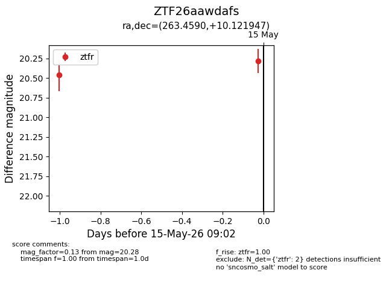
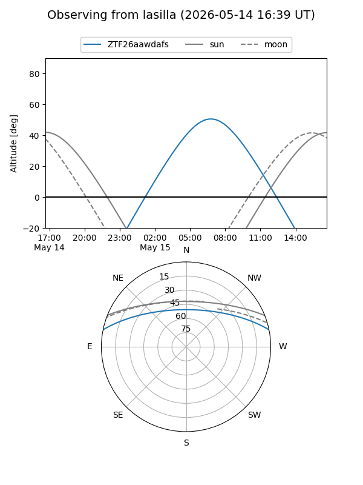
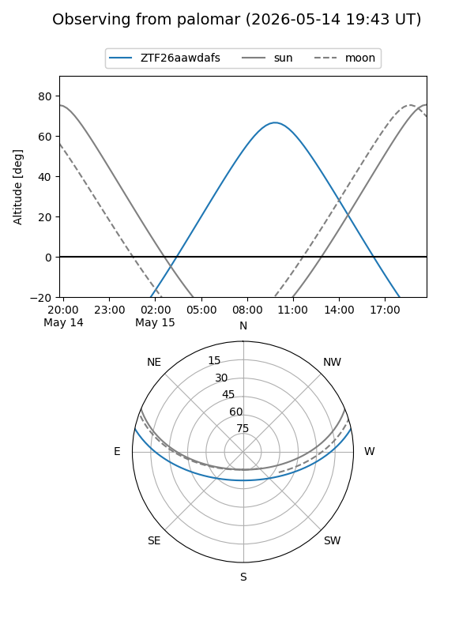

ZTF26aawdafs
Target ZTF26aawdafs at 2026-05-15 09:04
Aliases and brokers:
FINK: link
Lasair: link
ALeRCE: link
alt names
ZTF26aawdafs (ztf,fink_ztf)
Coordinates:
equatorial (ra, dec) = 263.4590,+10.12195
equatorial (HMS+DMS) = 17:33:50.16,+10:07:19.01
galactic (l, b) = (33.3826,+21.78729)
Flags:
Photometry:
last ztfr=20.28
2 ztfr detections
Lightcurve

Visibility


Additional plots